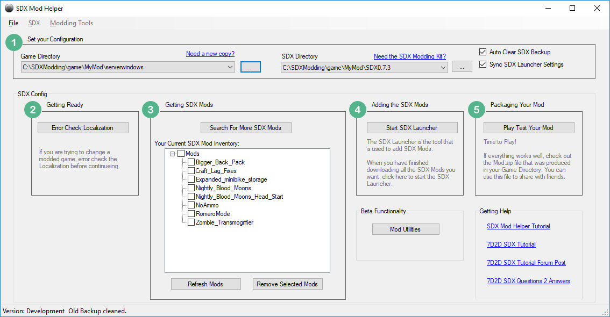
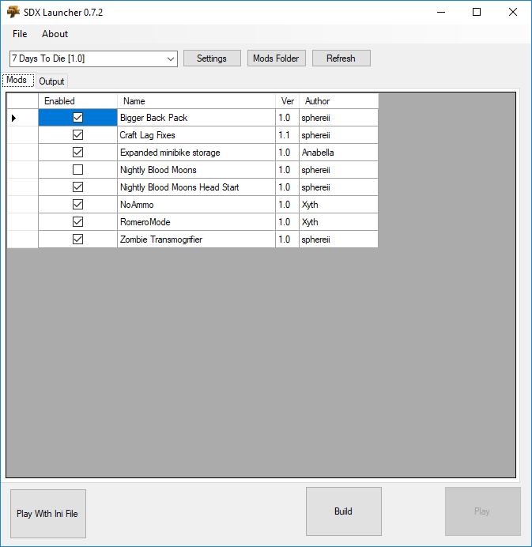
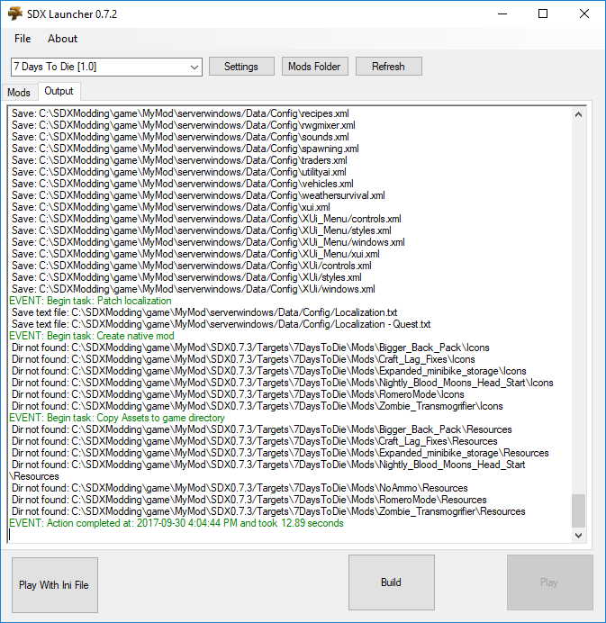

Once you are satisfied with your mix of SDX mods, you may choose to add SDX to the dedicated version.
In the 7D2D SDX Mod Helper, change the Game Directory to point to your Windows Dedicated build.

Click on Start SDX Launcher, and perform a build.


Note: The play button is disabled because its a dedicated version.
Close the SDX Launcher and return to the SDX Mod Helper.
Created with the Personal Edition of HelpNDoc: Free help authoring environment